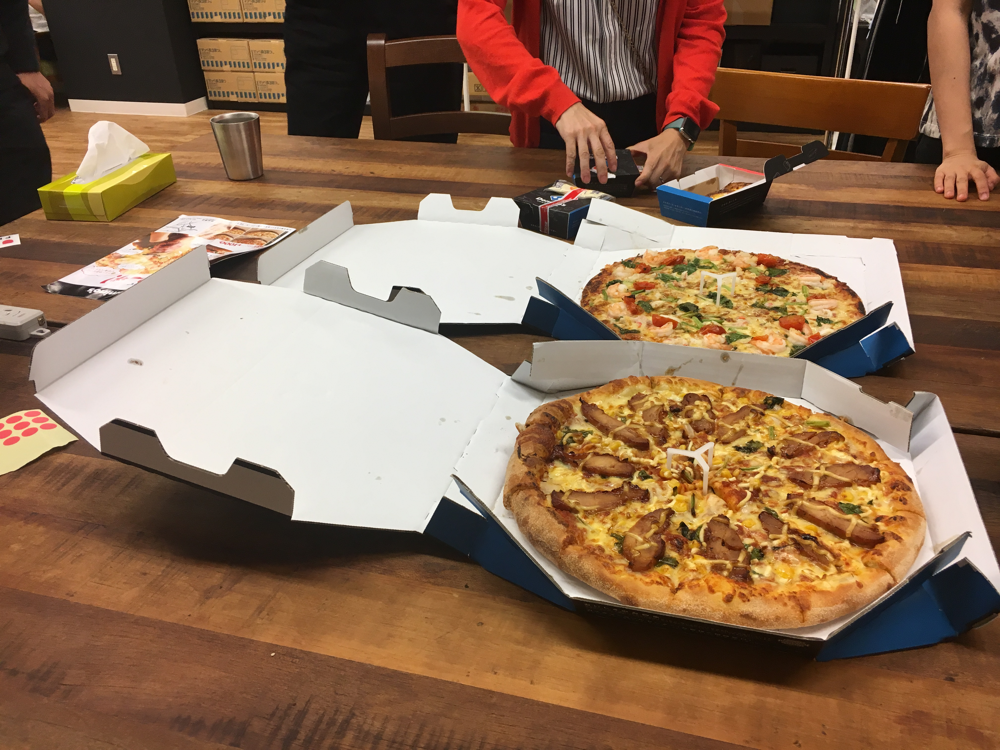

Pythonもくもく自習室 #1 に参加した #rettypy¶
Rettyさんがオフィスが移転したということでいってきました。広い！でかい！快適！
Pythonもくもく自習室 #1 @Rettyオフィス - connpass
https://twitter.com/kashew_nuts/status/888580908973932544
やったこと¶
jupyter-vim-binding 試してた¶
READMEのInstallationに書いてる方法だと、virtualenvを有効にした環境では動きませんでした。 なので lambdalisue/jupyter-vim-binding Wiki をちゃんと読んで、また試そうと思います。
(追記) 上記Wikiの通りにやったら上手く行きました。せっかく覚えたJupyterのショートカットとは変わるのでまた覚え直す必要がでてきましたが… とはいえやはりVimキーバインドを使えたほうが捗りそうです。
EffectivePython 読み進めた¶
所感はこんな感じ。
https://twitter.com/kashew_nuts/status/888662892752494592
以下学習メモです。2章関数・6章組み込みモジュールらへんをJupyterNotebookで動かしながらやってました。
デコレータ
ラップする関数への呼び出しの前後で追加コードを実行できる。
これによって、入力の引数や戻り値にアクセスして値を変更できる。
この機能は、セマンティクス強化、デバッグ、関数登録などを行うのに役立つ。
@記号は、デコレータをラップする関数を引数として呼び出して、戻り値を同じスコープの元々の名前に代入することと等価
funtools.wraps
デコレータは、実行時にある関数が他の関数を修正することを許すPython構文だ。
デコレータを使うことでデバッガのようなイントロスペクションをするツールに奇妙な振る舞いを引き起こすことがある。
問題をおこさないようにデコレータを自分で定義するときは、組み込みモジュールfuntoolsのデコレータwrapsを使う。
イテレータツール
アルゴリズムやデータ構造について、Pythonの組み込みモジュールを活用する。
複雑な反復処理をする場合は、組み込みモジュールitertoolsを用いてできないか検討する。
ジェネレータ (generator)
yield式を使う関数のこと。
ジェネレータ関数は、呼び出されると実際の作業をせずに、直ちにイテレータを返す。←どうゆうこと？
ジェネレータを使うと、格納した結果をリストで返すよりも、コードが明確になる。
ジェネレータが返すイテレータは、ジェネレータ関数の本体でyield式に渡される一連の値を生成する。
ジェネレータでは、作業メモリにすべての入出力を保持する必要がないので、どのような長さの入力に対しても出力のシーケンスを生成できる。
イテレータプロトコル
Pythonのforループや関連する式が、コンテナ型の内容をどのように横断するか示すもの。
コンテナとイテレータの違いは？
位置引数(仮引数、スター引数)
関数は、def文で *args を使うことで、可変個引数を受け入れられる。
すでにリストが会って、可変個引数関数を呼び出すなら、 *演算子 を使って呼び出せる。
*演算子 をジェネレータと一緒に使うと、プログラムがメモリを使い果たしてクラッシュすることがある。
デフォルト引数
デフォルト引数は一度しか評価されない。モジュールロード時の関数定義の時だけである。これは({}や[]のような)動的な値に奇妙な振る舞いをもたらすことがある。
動的な値をとるキーワード引数のデフォルト値にNoneを用いる。実際の振る舞いを関数のドキュメンテーション文字列に文書化しておくこと。
キーワード引数
キーワード引数は、関数呼び出しの意図をより明確にする。
キーワード専用引数を用いることで、特に、複数の論理型フラッグを使う場合など紛らわしい関数呼び出しの際に、呼び出し元に、キーワード引数を与えるように矯正できる。
Python3は、関数にキーワード専用引数の明示的な構文を用意している。
Python2では、 **kwargs を使い、TypeError例外を引き起こすことで、関数のキーワード専用引数をエミュレートできる。
AzureでJupyter試す¶
AzureでJupyter Notebookが使えるよとpyhackの合宿で聞いたので、最後の10分くらいでちょっと試してみました。
Azure Machine Learning の Jupyter Notebook 対応 ( 前編 ) が参考になりました。
FAQ を読むと「無料だよ！今後変わるかもしれないけど、無料枠は浸かるようにしたいと考えてるよ！」とのことなので、使ってみると良さそう。GCPにも同じようなのはあるらしい。AWSは…自分で作れってことですね。
お昼とかで話したこと¶
お肉美味しかったです。(お昼画像撮り忘れた…)
転職活動、Django、設計のお話、釣りやクライミングの話などしてました。
「こうゆう勉強会にでてるSier努めの人はたいてい転職を考えてる」という説
「やりたいことがあるなら一時の負荷をかけるという選択肢はありだよ」という説
「趣味大事」という説
なんかを話していたのが印象的です。
「Djangoを学ぶなら Django Girls Tutorial いいよね」とか、「そろそろ日本語のDjango本とかでないかなー。」とかいう話もしましたね。
成果発表¶
一人3分で発表。すごい、全員発表してた。
shinyorkeさん 主催です。 TokyuRuby会議11 の準備してました。
laughkさん https://github.com/laughk/footprint 作ってました。今日一日こんなことやってたなーというコメントを取れるようになるやつ。
Noriyukiさん Djangoのチュートリアルのメンテナンスしてました。が、いまSphinxのビルドが通らない。
iktakahiroさん slideshipというものを作ってます。今日はScrapyを作ってページ一覧用を取得するものを作ってました。 PyData.Tokyo Meetup #14 - NVIDIA GPU と ディープラーニング - connpass やります。今回は枠がいっぱいなので興味あるかは次回是非。
合原さん be, inc.で働いてます。機械学習の勉強してました。今日はグルーピングについて。
kashew_nuts(自分) 上記やったこと参照。あとこのBlog書いてました。
fou4さん PocketのAPI叩いてpandasで色々編集してた。
ヒラタさん 強化学習してました。DQNの写経。
???さん 新卒で広告代理店で営業職してます。プログラミングできるようになれ！と上司にいわれ、いろいろ調べてPythonやろうと思ってやりはじめた。今日は午前中OpenCV, 15:00ぐらいからスクレイピングをやってた。
たさいさん 2年目でAWSのインフラエンジニアしてます。 Pythonではじめるデータラングリング 試したり、PythonでEC2を操作する自作コマンドを作ってました。
miさん 某新聞社で働いてます。漫画サイトのスクレイピングしようと思ったらJSONがすでにあったので、ElasticSearchやってました。
kd8さん ガンダムが好きです。GPUの本をサラサラ読んで、AWSで試そうかなーと思ったら申請が必要だったらしい。
大平@mohira 3ヶ月ぐらい前からエンジニアをやってます。
パターン認識と機械学習 上 読んでます。 下巻 の方が分厚くて高い…
3層ニューラルネットワークのフルスクラッチ実装してました。
NaoYさん 某社の入社課題でDjangoやってました。あと1週間くらいでなんとかしたい。
#fablicvim 2に参加した¶
TwitterのTLでは観測していたけど、本当に実在してるのかわからなかった人たちが参加するらしいと聞いていってきました。
発表メモ¶
@tommy 「はじめてのVim script」(初級者〜中級者向け)¶
前職はPHPStorm。SSH接続先で作業とかPerlとか他の言語を触るときはVim。
dotfiles人のコピーして使ってたが、メンテしないとWarningでたり。現職ではは全部Vimで書いてる。
ujihisaさんに後ろからVim裁きを受けてるらしい。
Vim scriptでHelloWorldしてみる。→プラグインを作ってみよう。Vimでテストってどうやるの？→どれがいいの？→ thinca/vim-themis
感想: 「FablicにいればいつでもVimの詳しい人に話聞けるよ！」←確かに！
@thinca 「なぜ Vim はいきなり文字を入力できないのか」(初級者〜中級者向け)¶
Vim初心者あるある→Vimが終了できない。文字が入力できない。
「Vimとは？テキストエディタとは？テキスト編集とは？」→哲学的な話が多かった。
Vimにとってテキストを編集するのは機能の一部。基本はノーマルモード。
「Vimはテキストエディタ、それ以外はテキストインプッター。」→確かに入力(インプット)モードから始まってる！
感想: ピザ食べてる時にujihisaさんが「インサートモードは息を止めて、水に潜っている状態」といってたのが印象的だった。
@yowcow 「Vimの本番運用について」(初級者〜中級者向け)¶
「Vimのバージョン7.4？8.0？違います。8.0.xxxx←ここなんですか？」自分は596だった。(macvim-kaoriyaの最新バージョン)
いつものようにVimをアップデートしたら、2017-07-10からVimがneocompleteで死ぬ事例に遭遇。
何が問題ったか？→最新を追ってたら動かないことがあるのは当然。問題は過去のバージョンにロールバックできないこと。
デプロイ方法を見直そう。
感想: いつも使うものだからこそ、バックアップやリカバリーの手段を用意する大事だよね。
飛び入り発表枠 + Vimさばきを見せ合う枠¶
@rbtnn tasidebarの話
Vimプラグインではなく、Vim本体の機能として作ってます。
https://github.com/rbtnn/vim の tabsidebar ブランチで使えるよ。
感想: 最初プラグインの話し方と思ったら、実は本体の機能とする話ですげー！ってなった。
-
treeコマンドをVimでやる。
ファイルの開閉とかはgfとかVim組み込みコマンドを使ってもらえれば。
vimfilerの機能で使えてない機能が多く、シンプルなものが欲しかったので作ってみた。
感想: 高機能とシンプルでそれぞれ求めるものがあるよな。
@lambdalisue マクロ漁船の話。。。ではなく、python vim 最強とググると便利！
Vimを最強のPython開発環境にする2 - Λlisue’s blog 書きました。2013年のだけどVimのエッセンスが詰まっています。
wifi.vim とか battery.vim とか作りました。(ただしmacのみ対応)
denite.nvim 便利。Python3インターフェースを有効にする必要があるよ。
gina.vim 超便利
感想: ginaは「じーな」と呼ぶ。覚えた。
@ujihisa エンドレス発表
ただただすごい。会場説明、ライブピザ発注、飛び入り発表 x n回
Fablicはいいぞ！
雑感¶
自分のVimレベルはせいぜい初級〜中級者レベルなので、vital.vim開発者会議っぽいのを横目で見ながらすげー！って感じで聞いてました。
仕事ではPyCharm+IdeaVimプラグインを使ってるので、Vimはもっぱらメモ書く・何か試すとかに使う・設定ファイルいじるぐらいなのですが、やっぱりVim便利なのでそれなりに使えるようでいたいですね。
そしてまわりに聞ける人がいる環境に入れるのはやはりいいなと思うのでした。
終わりに¶
Fablicvim #3、そしてVimConf2017…やるらしいよ。
macOSからArchLinuxにしたが結局macOSに戻ってきた話¶
職場のPCがMacBook Proです。 OSはLinuxに変えても良いとのことだったので、VimでPython2/3の同時ロードがしたい自分は何も考えずにそれが可能なArchLinuxを使ってみたのですが、結局出戻りしました。
出戻りした理由¶
5つありますが、積極的な理由で戻ったわけではないです。
ブートマネージャーを壊した¶
一番の理由はこれ。
どうやら消しては駄目なところを消したらしく、再度入れ直しても復旧できなかった。
電源管理まわりが上手く動かなかった¶
MacBook Pro (Retina, 15-inch, Mid 2015) だとサスペンドやハイバーネートが上手く動かなかった。
なんだかんだいってmacOSの電源管理は優秀。
macOSの仕様に引っ張られるのがつらい¶
Slack2.6.0〜2.6.2で、日本語入力時に不具合が起きる件。
.DS_Store 邪魔…
macOSだと表示できる文字が、Linuxだと表示できないことが少しあった
Google日本語入力がないのが地味に厳しい…¶
辞書を追加しても、英語のスペルとか補完してくれなくなるのが痛い。
自分でいじれる=いじれないとそこでとまる¶
当たり前の話だけどいじれないとそこで止まる。
ArchLinuxで良かったところ¶
問題がなければそのまま使い続けていたと思います。Linuxデスクトップを使ってよかったところは以下。
速い。とにかく速い。¶
PyCharm, Chrome, Slackと立ち上げると、macOSは一度席を立つのにそれがない。
PyCharmのリモートデバッグもほとんど待たされない。
Linuxなので開発環境を整えるのが楽¶
pacman/yaourtが多種多様なパッケージをインストールできるので楽。
pip install hogehogeが普通に動く。VimのPython/Python3同時ロードが普通に使える。VimがSEGVしない。← 重要
LinuxからmacOSに戻ってきてよかったと感じたところ¶
ほとんど出戻りした理由の逆になってます。
電源管理がちゃんと動く¶
スリープが当たり前に動くのは素晴らしい。
macOSのしくみに乗っかれる¶
Slackで変な文字が表示されない、フォントが綺麗。もとに戻す手段が確保されている。
Google日本語入力がある¶
楽ですね。
アプリで解決手段が準備されていることがある¶
macOSが残念なところがあっても、アプリで解決手段が準備されていることがある。Google日本語入力だけだと Ctrl+[ で ESC が動かなかったので、 BetterTouchToolを使ったり。